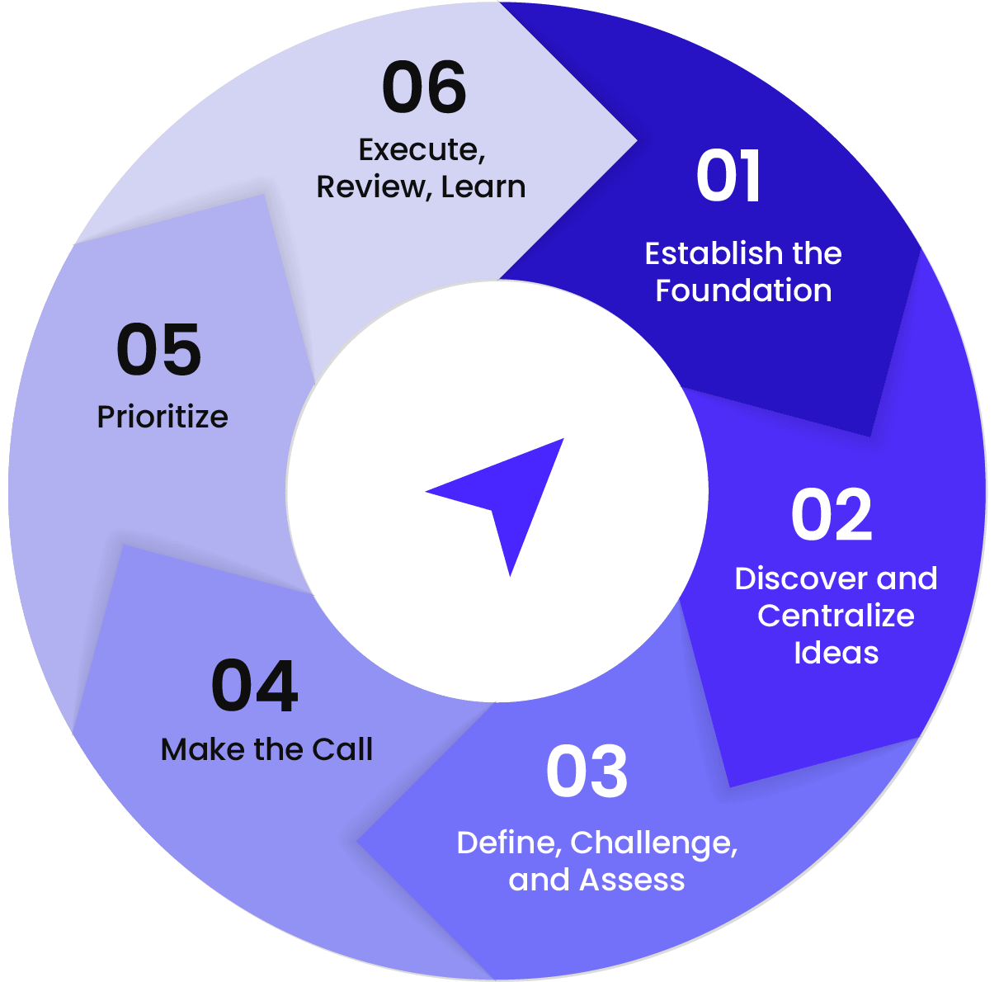

The loudest voice wins.
Decisions are made not on the merit of an idea or comparison of potential outcomes, but by a small set of voices, usually with limited insight.
A structured, repeatable system for defining ideas, evaluating financial outcomes, and committing to strategic choices.
Yet in the rush to move faster, many teams fall into a new trap: believing that if execution is cheaper and quicker, they can do everything. The rise of rapid prototyping, vibe coding, and instant iteration creates the illusion that limits no longer apply. In reality, it often leads to bloat, a lack of direction, product sprawl, and wasted effort chasing ideas that never connect to strategy or deliver financial results.
Without a clear decision framework, speed amplifies chaos instead of progress.
Most teams still make decisions without a consistent process, relying on gut instinct, influence, or incomplete data. The problem only grows as the business scales, with inputs from customers, GTM teams, product, partners, and operations multiplying and making it harder to separate signal from noise and reach informed decisions.
It is no surprise that most fail to deliver sustainable results.
Decisions are made not on the merit of an idea or comparison of potential outcomes, but by a small set of voices, usually with limited insight.
Teams pursue ideas without sufficient alignment on expected business impact, leading to confusion, poor execution, and missed expectations.
Roadmaps or strategic initiatives fail to live beyond expensive planning sessions, quickly unraveling as new variables or shifting priorities emerge.
Teams struggle to say no or defer work, creating long lists of competing projects that drain resources and dilute focus.
When teams lack clarity on how their work drives revenue or impact for the business, initiatives often fail to achieve their intended purpose.
of organizations fail to execute their strategies successfully, according to Harvard Business Review.The issue is rarely poor execution; it is poor decisions made upstream. In today’s environment, where speed and innovation determine survival, the cost of misaligned or failed initiatives often decides a company’s fate.
Most leaders can sense when something in their organization is not working. Deadlines slip, priorities shift, and progress feels slower than it should. The truth is that what looks like an execution issue is often a decision issue in disguise.
Most organizations do not fail because they lack ambition. They fail because they lack a consistent and well-informed way to make decisions that scale. Major successes and setbacks can be traced back to one simple truth: what a team decides to work on determines how they perform. Perfect execution on a bad idea will always result in a loss, while imperfect execution on a great idea can still deliver a major win.
A decision methodology is a structured, repeatable system for how an organization defines ideas, evaluates financial outcomes, and commits to strategic choices.
It creates a shared language and consistent process for comparing ideas and initiatives, weighing risks, and connecting every decision back to measurable business outcomes. It transforms decision-making from art into discipline, grounded in clarity, data, transparency, and purpose.
However, a methodology alone is not enough. Most teams already know what they should be doing—aligning around goals, quantifying impact, and measuring trade-offs. What is missing are the tools to operationalize those principles, collect inputs, run scenarios, track assumptions, and maintain a live record of every decision. Teams also need the confidence to say no to ideas and distractions that do not move the business forward. That is why Profitic was built: to turn great decision-making into an everyday practice.
The Profitic Methodology, on which the platform is built, was born from hard-earned experience.
Bruce Wanta, Profitic’s Chairman and co-founder, learned the cost of poor strategic decisions while scaling his first company, Spectrum Controls. In its early days, Spectrum’s direction was clear and execution came easily. But as the company grew, the absence of a rigorous decision process led to a disastrous product launch—a single misstep that nearly put the company out of business.
The big bet looked perfect: a new product for a key partner that promised to double revenue overnight. On paper, the numbers worked, and the partner was confident. Trusting that optimism, the company went all in, investing heavily to meet the expected demand. When the product failed, the fallout was immediate and severe.
Recovering from that failure required more than process fixes; it required rethinking how strategic decisions were made. The result was a system built on data, transparency, and cross-functional accountability—the foundation of the Profitic Methodology.
The Profitic platform exists to make that methodology real for every company.
It turns strategy into a clear, collaborative process that helps teams move fast, align confidently, and make better decisions that deliver measurable results. At its core, it helps organizations do something few manage well: say no with confidence and focus on what truly drives outcomes.
When everyone can see which opportunity represents the clear win, the decision becomes obvious. No more second-guessing priorities or debating roadmaps. The best ideas rise naturally because everyone sees the same data—and wants the same win.
The Profitic Methodology transforms strategic planning from a once-a-year exercise into a continuous, data-driven system. It provides a disciplined yet flexible framework to discover, evaluate, and prioritize ideas while aligning the organization around what matters most.

The Profitic Methodology creates a living system of strategic discipline that compounds with every cycle. Profitic, the platform, formalizes this methodology, giving teams the structure, visibility, and automation to institutionalize it on a recurring basis. It transforms good planning habits into an operating rhythm where clarity, comparability, and accountability are built into every decision.
Effective decision-making starts with structure and intent. Leadership must commit to a formal framework and treat strategy and decision-making as an ongoing discipline. The process begins by defining how decisions will be made, who owns them, and how success will be measured.
With the foundation in place, organizations open the funnel for new ideas. Opportunities surface across GTM feedback, customer insights, partner discussions, Product Marketing and Engineering insights, and operational improvements. Centralizing and tagging these inputs reveals patterns and themes that help teams identify where the most meaningful opportunities lie.
Promising ideas move through a structured vetting process. Product, GTM, Customer, and Development teams refine concepts together, quantify costs and impact across best-to-worst-case ranges, test assumptions with data, and identify development and market risks. Each idea becomes a clear, defensible business case grounded in evidence rather than opinion.
Once ideas are fully assessed, leadership evaluates them as a unified portfolio. Viewing opportunities side by side enables true comparison and forces strategic clarity. Leaders say yes to the most valuable initiatives and no to those that do not align or deliver sufficient return. Explicitly deciding what not to pursue focuses resources where they matter most and builds organizational confidence.
Understanding the value of a project and its priority across the organization removes the guesswork and internal conflict that inevitably occur when priorities are unclear. When resource limitations arise, it is clear to everyone why the higher-priority projects get the attention they need. Clear prioritization eliminates the chaos and distraction that make organizational decisions feel like constant fire drills where every issue must be escalated and “sold” to leadership. It calms the organization and preserves focus.
Execution is part of the strategy loop, not the end of it. Regular reviews measure progress against assumptions, allowing teams to adjust early and stay aligned. If a project becomes stuck or delayed, leaders can evaluate trade-offs between adding resources or adjusting timelines in real time, allowing teams to “win” with appropriately reset expectations. When projects close, results are captured and lessons feed back into the next cycle, refining team assumptions and strengthening the organization’s collective intelligence over time.
In a world where misaligned decisions drain energy, people, time, money, and momentum, clarity becomes the ultimate competitive advantage. Profitic gives teams the discipline, visibility, and rhythm to achieve it, turning strategy from a static plan into a living engine of growth.
The Profitic Methodology turns strategic planning into a continuous cycle rather than a one-time event. Each round of execution informs the next, creating a living process that adapts, learns, and improves with every turn. This rhythm builds momentum, but its true power lies in the clarity it creates. When teams understand the why and what behind their work, they move decisively and in sync. Investing in clarity up front accelerates everything that follows, while saying no to the wrong initiatives creates the space to execute the right ones with confidence and speed.
The Profitic platform exists to make that clarity sustainable. It operationalizes the methodology by capturing ideas, modeling impact, tracking decisions, and keeping the strategic plan alive through execution. Profitic gives leadership a live view of what is working, what is not, and what comes next. It ensures that strategy does not gather dust but drives action, accountability, and measurable results every day.
Bring a list of ideas or investments you are considering, and start assessing them by value immediately.